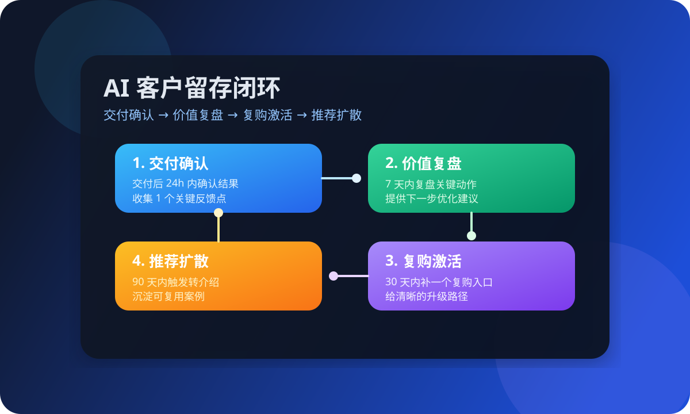

这篇先解决什么
先解决“成交后没人跟”“客户反馈收不到”“复购靠碰运气”“推荐没有入口”这些更真实的问题，再谈复杂的 CRM 或自动化系统。
很多人搜“AI 客户留存怎么做”“客户复购怎么做”“客户维护怎么做”，真实问题往往不是没有工具，而是成交之后没有持续动作：没有交付确认、没有复盘提醒、没有清晰的复购入口。对一人公司来说，AI 客户留存最值钱的地方，不是把关系聊得更热，而是把每一次成交变成下一次更自然的复购。

先解决“成交后没人跟”“客户反馈收不到”“复购靠碰运气”“推荐没有入口”这些更真实的问题，再谈复杂的 CRM 或自动化系统。
Harris 的关键词策略强调：先研究“用户在问什么”，再决定“哪一页承接”。放到留存上也是同样逻辑——客户成交后的第一句问题是什么，你就先把这一句承接好。Shopify 的留存策略与 HubSpot 的客户留存定义都指向一个事实：留存是让客户继续购买并建立长期关系的能力。MBA 智库对客户保持率的解释也提醒我们，留住老客户比开发新客户更容易、成本也更低。对一人公司来说，最现实的做法不是堆很多系统，而是先把成交后的 4 个动作跑顺，把客户留在下一次复购的路线上。
这 4 个动作的重点不是复杂，而是让客户知道“下一步是什么”，让你知道“下一次复购在哪里”。
成交并不是终点，交付后 24 小时的确认决定了客户是否真正感到“被接住”。只要确认结果、确认是否达到预期，并记录 1 个关键反馈点，你就有了下一次复盘的抓手。
复盘不是为了写总结，而是为了让客户看到你的工作如何产生效果。只要把“做了什么、结果是什么、下一步建议是什么”写清楚，就能把信任从“交付完成”延续到“愿意继续合作”。
复购入口不是“再买一次”，而是一个明确升级路径，比如“第二阶段可以做什么”“下一步可以补哪块”。给清晰路径，客户更容易判断是否继续。
留存的最后一步不是“再发一条消息”，而是让客户愿意为你背书。你可以给一个简单的推荐模板、案例整理表，或者邀请他参与一次简短复盘分享。
对一人公司来说，留存更像“节奏管理”，而不是“系统复杂度”。
建议只保留 3 个目标：确认交付、收集反馈、设计复购入口。目标过多会让节奏失焦。
比如“交付完成 → 是否达到预期 → 哪一点最有价值”。AI 可以用这条模板做提醒和记录。
固定在第 7 天提醒复盘，避免“看似忙但其实忘了”。复盘内容越具体，复购越容易。
不一定是直接销售，而是“下一步可以补的模块”。这一步决定了你是否有稳定复购。
把推荐做成具体动作：一段短文案、一个案例表、一个简单的分享入口。
本月复购来自哪些客户？哪一步最容易断？哪个内容最容易触发复购？只看这 3 件事就够用。
AI 可以按时间自动提醒你做交付确认，避免成交后“掉线”。
把交付过程和关键结果整理成复盘摘要，让客户快速看懂价值。
根据客户的卡点自动推荐一篇文章或 FAQ，降低沟通成本。
在 30 天节点提醒你发出升级建议，而不是等客户自己想起。
把推荐需求做成可复制的模板，让客户更容易帮你介绍。
先把官网咨询分层，再决定谁应该进入留存流程。
如果你还没把线索跟进跑顺，先把最小销售链路跑起来。
如果你想把留存、复购和转介绍做成体系，可以直接沟通现状。
如果你现在也在做官网咨询、内容承接或客户复购，可以把现状发来，我们先帮你拆成最小可执行的留存清单。